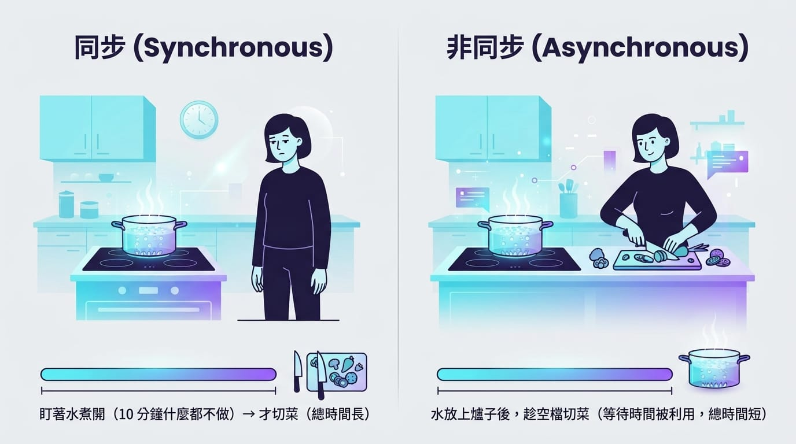

上一篇學會處理一堆資料。這篇講另一個現代程式幾乎必用的技能：非同步（async/await）——讓程式在「等待」的時候不會整個卡住。
這主題聽起來很硬，但觀念其實很生活化。我用一個煮菜的比喻帶你進入。
一、為什麼需要非同步
想像你在煮晚餐，要「煮一鍋水」和「切菜」兩件事。有兩種做法：
- 同步（笨方法）：先盯著水煮開（站在那裡等 10 分鐘什麼都不做），水開了才去切菜。總共花很久。
- 非同步（聰明方法）：水放上爐子後，趁等水開的空檔去切菜。等待的時間被利用起來，整體快很多。
程式也一樣。有些操作很慢、而且是在「等待」——例如：
- 從網路下載檔案、呼叫 API。
- 讀寫大檔案。
- 查詢資料庫。
如果用「同步」寫法，程式會卡在那裡等，什麼都做不了。在有畫面的 App 裡，這會讓整個介面「凍結」——使用者點什麼都沒反應，體驗很差。非同步就是要解決這個問題：等待時，讓程式能去做別的事。

二、Task 與 async / await
C# 用三個關鍵字來寫非同步：Task、async、await。
Task：代表「一件正在進行、未來才會完成的工作」。可以想成餐廳的取餐號碼牌——你拿到號碼牌（Task），不用站在櫃台等，餐好了再憑號碼牌取。async：標記一個方法「裡面會有非同步操作」。await：等待某個 Task 完成、拿到結果，但等待時不卡住整個程式。
看一個基本範例：
class Program
{
// Main 也可以是 async，才能在裡面用 await
static async Task Main()
{
Console.WriteLine("開始煮水…");
await BoilWater(); // 等水開，但等待時不卡死
Console.WriteLine("水開了，可以泡茶！");
}
// async 方法：回傳 Task 代表「這是一件非同步工作」
static async Task BoilWater()
{
await Task.Delay(3000); // 模擬等待 3 秒（Task.Delay 是非同步版的「等待」）
Console.WriteLine("（3 秒後）水滾了");
}
}拆解重點：
- 方法前面加
async，裡面才能用await。 BoilWater回傳型別是Task（代表「一件沒有回傳值的非同步工作」）。await BoilWater()的意思是「等它做完再往下」，但這個「等」不會凍結程式。Task.Delay(3000)是「非同步地等 3 秒」，常用來模擬耗時操作。（別跟Thread.Sleep搞混——那個是會卡死的同步等待。）
有回傳值的非同步：如果非同步工作要吐回結果，回傳型別用 Task<T>：
static async Task<int> GetNumberAsync()
{
await Task.Delay(1000); // 模擬耗時
return 42; // 回傳的是 int，所以型別寫 Task<int>
}
// 使用：await 會幫你把 Task<int> 裡的 int 取出來
int result = await GetNumberAsync(); // result = 42命名慣例：非同步方法習慣以Async結尾（例如GetNumberAsync、DownloadAsync），讓呼叫者一看就知道「這要 await」。
三、常見用法：呼叫網路 API
非同步最經典的場景就是抓網路資料。C# 用 HttpClient，它的方法大多是非同步的：
class Program
{
static async Task Main()
{
using HttpClient client = new HttpClient();
Console.WriteLine("開始下載…");
// GetStringAsync 回傳 Task<string>，await 取出網頁內容字串
string content = await client.GetStringAsync("https://example.com");
Console.WriteLine($"下載完成，長度 {content.Length} 字");
}
}重點是 await client.GetStringAsync(...)——下載這種慢操作，用 await 等它、但不凍結程式。這跟我們在資料篇（下一篇）會深入的「從網路取資料」是同一套路。
四、同時做多件事：Task.WhenAll
非同步真正威力在於同時進行多件事。假設要下載三個網頁，與其一個等完再等下一個，不如同時發動、一起等：
static async Task Main()
{
using HttpClient client = new HttpClient();
// 同時發動三個下載（先不 await，讓它們一起跑）
Task<string> t1 = client.GetStringAsync("https://example.com");
Task<string> t2 = client.GetStringAsync("https://example.org");
Task<string> t3 = client.GetStringAsync("https://example.net");
// 一次等三個都完成
string[] results = await Task.WhenAll(t1, t2, t3);
Console.WriteLine($"三個都下載完了，共 {results.Length} 筆");
}Task.WhenAll 讓三件事並行，總時間接近「最慢那一件」，而不是三件相加。這就是非同步省時間的關鍵。
五、兩個常見陷阱
非同步很好用，但有兩個新手雷區先知道：
1. 不要用 async void
static async void DoSomething() { ... } // ❌ 避免
static async Task DoSomething() { ... } // ✅ 用 Taskasync void 的方法沒辦法被 await，出錯時也很難處理。除了特定情況（例如事件處理），一律用 Task 而非 void。
2. 不要用 .Result 或 .Wait() 硬等
int x = GetNumberAsync().Result; // ❌ 可能造成死鎖、卡死
int x = await GetNumberAsync(); // ✅ 老實用 await.Result 看起來像「直接拿結果」，但它會同步卡住，在某些環境甚至造成死鎖（程式永遠卡住）。要拿非同步的結果，就用 await，別抄捷徑。
六、動手綜合練習
做一個「同時煮三道菜」的小程式，體會並行的威力：
class Program
{
static async Task Main()
{
Console.WriteLine("開始準備晚餐…");
// 三道菜同時開煮
Task soup = CookAsync("湯", 3000);
Task rice = CookAsync("飯", 2000);
Task veggie = CookAsync("青菜", 1000);
await Task.WhenAll(soup, rice, veggie); // 等三道都好
Console.WriteLine("晚餐全部完成，開動！");
}
static async Task CookAsync(string dish, int ms)
{
Console.WriteLine($"{dish} 開始煮…");
await Task.Delay(ms); // 模擬烹煮時間
Console.WriteLine($"{dish} 煮好了（花了 {ms / 1000} 秒）");
}
}跑跑看——三道菜「同時」在煮，總時間約等於最久的那道（3 秒），而不是 3+2+1=6 秒。試著改成「一道一道煮」（把每個 Cook 前面加 await），比較一下總時間差多少，就會對非同步很有感。
這一步大約要花多久？
非同步是觀念門檻，建議抓 1~2 週慢慢消化。重點不是記語法，而是理解「等待時不卡住」這件事。練法：
- 先用
Task.Delay模擬耗時操作，練async/await的基本流程。 - 練
Task.WhenAll的並行，體會它跟「一個個等」的時間差。 - 記住兩個雷：不要
async void、不要.Result。
實務上你用到的套件（網路、資料庫、檔案）大多提供 XxxAsync 版本，學會這套就能正確使用它們。
下一篇
會非同步之後，下一篇是進階篇最後一塊：檔案讀寫與 JSON——讓你的程式能把資料存進檔案、再讀回來，程式才能真正「記住東西」。這也是下一步實戰專案的重要基礎。
下篇見。🐾
※ 本連結為 Hahow 好學校聯盟連結，連結導向 Hahow 平台（非特定課程頁）；透過它購課我會獲得少許回饋，不影響你的售價。
系列導覽
- 📚 回到 C# 程式設計完整教學 全系列目錄
- ⬅️ 上一篇：集合與 LINQ：優雅地處理一堆資料
- ➡️ 下一篇：檔案讀寫與 JSON：讓程式能存資料、讀資料